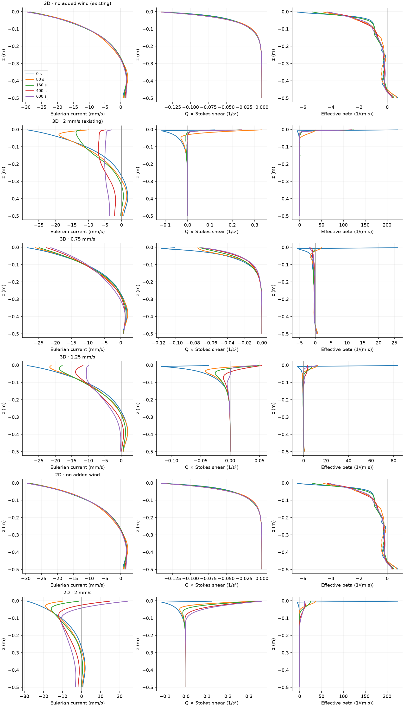

Does Eulerian shear predict jet disruption?
This small pilot starts from the same spontaneously generated jet and tests two weaker wind stresses plus two runs constrained to remain independent of the transverse direction. The completed no-wind and strong-wind 3D runs are reused without rerunning them.
| Case | Status | Outputs |
|---|---|---|
| 3D · no added wind (existing) | complete | Shear analysis · Time series |
| 3D · 2 mm/s (existing) | complete | Shear analysis · Time series |
| 3D · 0.75 mm/s | complete | Shear analysis · Time series |
| 3D · 1.25 mm/s | complete | Shear analysis · Time series |
| 2D · no added wind | complete | Shear analysis · Time series |
| 2D · 2 mm/s | complete | Shear analysis · Time series |
![Top: observed jet prominence and 3D energy. Bottom: full-depth viscous roll eigenvalues about the maintained laminar continuation, restricted to wavelengths with at least six cells on the parent transverse grid. The reference uses only the initial mean and prescribed forcing; the full and four-cell spectra are retained in the data. Six cells is a screening choice, not demonstrated nonlinear convergence. The exposure integrates each fixed spanwise wavenumber separately before taking the maximum. It assumes slowly adapting modes and is not a time-dependent propagator gain. Dashed lines are 2D interventions that prohibit transverse rolls; their spectra are counterfactual susceptibility if 3D freedom were restored.](pilot-comparison.png)

Does 3D freedom change the wind response?
| Elapsed s | Wind − control, 3D | Wind − control, 2D | Difference of effects |
|---|---|---|---|
| 200 | -0.232 | -0.141 | -0.090 |
| 400 | -0.163 | 0.117 | -0.280 |
| 600 | -0.247 | -0.121 | -0.126 |
| 800 | -0.121 | -0.129 | 0.008 |
| 1000 | 0.000 | -0.058 | 0.058 |
| 1200 | 0.085 | 0.000 | 0.085 |
Values are fractions of initial jet prominence. A negative last column indicates additional wind-driven erosion when 3D freedom is allowed, beyond the wind response in the projected 2D system. This intervention includes indirect changes to subsequent 2D eddies.
How this pilot is assessed
The control is natural continuation from the same saved field. The 2D interventions preserve its transverse mean and in-plane eddies while removing transverse variations. Their difference from 3D evolution tests the role of 3D freedom, including its indirect effect on later 2D motions. It does not identify one isolated term.
The linear model retains depth dependence, viscosity and homogeneous perturbation stress boundaries. It tests every spanwise mode 1–31 on the 64-cell reference grid, checks modes 32/48/64 beyond that band, and uses 48 vertical basis modes with 24/72 checks of the winning mode. Leading wavelengths with fewer than four transverse grid cells, or positive-shear layers thinner than four vertical cells, are flagged. These are resolution screens, not nonlinear convergence tests; the continuum growth operator also differs from the native centered-advection stencil. It neglects the x-varying eddy field and transient modal adaptation. A positive local shear product or an integrated frozen eigenvalue is therefore not by itself a validated jet-destruction criterion.
Resolution flags: 3d-u0-reference: 3d-u002-reference: some leading wavelengths have fewer than four transverse grid cells; some positive-shear surface layers have fewer than four vertical cells; 3d-u00075: 3d-u00125: some positive-shear surface layers have fewer than four vertical cells; 2d-u0: 2d-u002: some leading wavelengths have fewer than four transverse grid cells; some positive-shear surface layers have fewer than four vertical cells;
Existing evidence is retrospective. The two intermediate stresses are new prospective tests. A broader sweep should wait until the rate diagnostics, 2D intervention and budget checks agree. No absence of jets with small 3D feedback is counted as failure of a necessary-condition argument.
Full analysis · Predictions recorded before submission · Prediction input · Frozen protocol · Cases · Input provenance